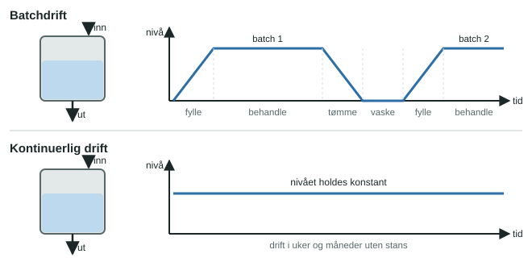

Batch og kontinuerlig drift
Et anlegg kan lage produktet sitt på to måter. Enten lager det én porsjon om gangen, eller så går råstoffet inn og produktet ut hele tiden, døgnet rundt. Hvilken måte anlegget bruker, bestemmer hvordan du jobber som operatør.
Batchdrift: én porsjon om gangen
Ved batchdrift lager anlegget produktet i porsjoner. En slik porsjon kalles en batch. Det er som når du baker brød hjemme: Du blander en deig, lar den heve, steker den og tar den ut. Så kan du begynne på neste.
I en fabrikk går en batch gjennom de samme stegene hver gang:
- Fylle: Råstoffene fylles i en tank eller en reaktor.
- Behandle: Innholdet blir rørt, varmet, kjølt eller får reagere i en bestemt tid.
- Tømme: Produktet tappes ut.
- Vaske: Tanken rengjøres, slik at neste batch ikke blir forurenset.
Batchdrift brukes når det lages små mengder, når produktet skiftes ofte, eller når kvaliteten må kontrolleres nøye. Eksempler er medisiner, lakk og maling, lim, spesialkjemikalier, øl og ost.
Hver batch får et batchnummer. Da kan bedriften spore nøyaktig hvilke råstoffer som ble brukt, hvem som jobbet og hva prøvene viste. Hvis det blir oppdaget en feil, vet bedriften hvilken batch som må holdes tilbake.

Kontinuerlig drift: hele tiden
Ved kontinuerlig drift går råstoffet inn og produktet ut hele tiden. Anlegget kan gå i uker, måneder eller år uten å stoppe. Det stopper bare ved planlagt vedlikehold eller ved feil.
Når anlegget går som det skal, er det i stasjonær tilstand. Det betyr at strømmene inn og ut, temperaturer, trykk og nivåer holder seg like over tid. Det går like mye stoff inn i en tank som ut av den, og derfor står nivået stille. Operatørens viktigste jobb er å holde anlegget stabilt og å oppdage avvik tidlig. Hvordan anlegget holdes stabilt med målinger og regulering, lærer du i Automasjon.
Kontinuerlig drift brukes når det lages store mengder av det samme produktet. Eksempler er oljeraffinerier, gjødselfabrikker, papirfabrikker og vannrenseanlegg. Smelteovnene på et smelteverk går også døgnet rundt.
Fordeler og ulemper
| Batchdrift | Kontinuerlig drift | |
|---|---|---|
| Mengde | Små og mellomstore mengder | Store mengder |
| Bytte produkt | Lett. Samme utstyr kan lage mange produkter. | Vanskelig. Anlegget er bygd for ett produkt. |
| Kvalitet | Hver batch kan kontrolleres og godkjennes for seg. | Jevn kvalitet når anlegget er stabilt. |
| Arbeid | Mye manuelt arbeid: fylle, tømme og vaske | Mye er automatisert. Operatøren overvåker. |
| Start og stopp | Skjer hele tiden, er en del av jobben | Sjelden, men tar lang tid og er krevende |
| Utstyr | Billigere og enklere å bygge | Dyrt å bygge, men billig per tonn produkt |
Oppgave: En batchreaktor tar 5 m³. En batch tar 8 timer, når fylling, reaksjon, tømming og vask er regnet med. Et kontinuerlig anlegg lager 1 m³ produkt i timen. Hvilket anlegg lager mest per døgn?
Løsning:
- Et døgn har 24 timer. Batchreaktoren rekker 24 h / 8 h = 3 batcher per døgn.
- Batchreaktoren lager 3 · 5 m³ = 15 m³ per døgn.
- Det kontinuerlige anlegget lager 24 h · 1 m³/h = 24 m³ per døgn.
Svar: Det kontinuerlige anlegget lager mest, 24 m³ mot 15 m³, selv om reaktoren tar hele 5 m³ om gangen. Batchreaktoren bruker mye av tiden på fylling, tømming og vask.
Batch og kontinuerlig i samme anlegg
Mange anlegg har både batchtrinn og kontinuerlige trinn. For eksempel kan en reaktor lage produktet i batcher, mens destillasjonen etterpå går kontinuerlig. Da trengs en buffertank mellom dem. Reaktoren tømmer en hel batch i buffertanken, og destillasjonen henter jevnt fra den. Buffertanken tar opp forskjellen, slik at begge trinnene kan gå i sitt eget tempo.
Buffertanker brukes også mellom kontinuerlige trinn. Hvis ett trinn må stoppe en kort stund, kan resten av anlegget fortsette på det som ligger i tanken.
- Start og stopp er blant de mest risikable øyeblikkene i begge driftsformer. Da endrer trykk, temperatur og mengder seg raskt, og mange ulykker skjer nettopp da. Følg prosedyren nøye.
- Batchdrift har mye manuelt arbeid med kjemikalier: fylling, prøvetaking og tømming. Bruk riktig verneutstyr. Før noen går inn i en tank for å vaske eller inspisere, skal den være tømt, spylt, blindet og luftet, og sikret med lås og merk. Det trengs arbeidstillatelse, gassmåling og en vakt utenfor. Les mer om arbeid i lukkede rom.
- Kontinuerlig drift går ofte stabilt i lang tid. Da er det lett å slutte å følge med. Små endringer i målingene kan være det første tegnet på en feil.
Test deg selv
1. Hva er en batch?
- Et anlegg som går døgnet rundt
- En porsjon produkt som lages i én omgang
- En tank mellom to trinn i anlegget
En batch er én porsjon som fylles, behandles og tømmes før neste porsjon starter. Tanken mellom to trinn er en buffertank.
2. Et anlegg er i stasjonær tilstand. Hva betyr det?
- Anlegget står stille.
- Strømmer, temperaturer, trykk og nivåer holder seg like over tid.
- Anlegget er stoppet for vedlikehold.
I stasjonær tilstand er anlegget i full drift, men ingenting endrer seg over tid. Det går like mye inn som ut, så nivåene står stille.
3. En fabrikk lager 30 ulike typer maling (farge) i små mengder. Hvilken driftsform passer best?
- Batchdrift
- Kontinuerlig drift
Batchdrift passer når produktet skiftes ofte og mengdene er små. Samme utstyr kan brukes til mange produkter, og tanken vaskes mellom hver batch.
4. Hvorfor får hver batch et batchnummer?
- For å vite hvor mye den veier
- For å kunne spore råstoffer, prøver og arbeid hvis det blir funnet en feil
- For å vite hvilken tank den skal i
Med batchnummeret kan bedriften finne ut nøyaktig hvordan batchen ble laget. Hvis en feil blir oppdaget, vet bedriften hvilken batch som må holdes tilbake.
5. En reaktor lager batcher, og destillasjonen etterpå går kontinuerlig. Hva trengs mellom dem?
- En sikt
- En ekstra reaktor
- En buffertank
Buffertanken tar imot en hel batch om gangen og gir jevnt videre til destillasjonen. Da kan begge trinnene gå i sitt eget tempo.
Ordliste
| Begrep | Forklaring | Engelsk |
|---|---|---|
| batch | En porsjon produkt som lages i én omgang, fra fylling til tømming. | batch |
| batchdrift | En driftsform der anlegget lager produktet i porsjoner, én om gangen. | batch process |
| kontinuerlig drift | En driftsform der råstoff går inn og produkt går ut hele tiden, ofte i uker og måneder uten stans. | continuous process |
| stasjonær tilstand | En tilstand der strømmer, temperaturer, trykk og nivåer i et anlegg i drift holder seg like over tid. | steady state |
| batchnummer | Et nummer som følger en batch, slik at det går an å spore hvordan den ble laget. | batch number, lot number |
| buffertank | En tank mellom to trinn i et anlegg som jevner ut forskjeller i mengde, slik at trinnene kan gå i hvert sitt tempo. | buffer tank |
Les mer
- Automasjon: hvordan anlegget holdes stabilt med målinger og regulering.
- Mekaniske, termiske og kjemiske operasjoner: forrige side.
Om kildene: Teksten, eksemplene og figurene på denne siden er laget for dette nettstedet. Siden bygger på undervisningsopplegg i kjemiprosess- og laboratoriefag ved Sauda vgs, som er utarbeidet med utgangspunkt i blant annet Kjemien stemmer, Laboranten og åpne nettkilder.